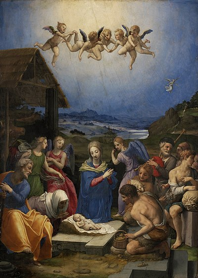

Noel, Noel ...
Lễ Giáng Sinh (còn được gọi là Noel, Christmas) là lễ hội kỷ niệm sự ra đời của Chúa Giêsu, được tổ chức chủ yếu vào ngày 25 tháng 12[a] hằng năm như một lễ kỷ niệm tôn giáo và văn hóa của hàng tỷ người trên thế giới.[4][5] Là một ngày lễ trọng tâm của năm phụng vụ Kitô giáo, nó kết thúc mùa Mùa Vọng và bắt đầu mùa Giáng Sinh, theo lịch sử ở phương Tây kéo dài mười hai ngày và lên đến đỉnh điểm vào Đêm thứ mười hai (đêm trước Lễ Hiển Linh). Ngày Giáng sinh là một ngày nghỉ lễ ở nhiều quốc gia trên thế giới,[6][7][8] được tổ chức tôn giáo theo đa số Kitô hữu,[9] và cũng được tổ chức như lễ hội văn hóa của nhiều người ngoài Kitô giáo,[10] và tạo thành một phần không thể thiếu của kỳ nghỉ lễ tập trung xung quanh ngày này. 
Câu chuyện truyền thống về Giáng sinh, sự giáng sinh của Giêsu, được mô tả trong Tân Ước nói rằng Giêsu được sinh ra ở Bethlehem, phù hợp với những lời tiên tri của đấng thiên sai.[11] Khi Giuse và Maria đến thành phố, nhà trọ không còn chỗ trống và vì vậy họ phải ngủ bên ngoài một chuồng ngựa nơi Chúa Hài Đồng được sinh ra sau đó, với các thiên thần loan báo tin này cho những người chăn cừu, sau đó họ đã lan rộng thông tin này.
Mặc dù không rõ tháng và ngày sinh của Giêsu, nhưng giáo hội vào đầu thế kỷ thứ tư đã ấn định ngày sinh của Người là 25 tháng 12.[12][13][14] Điều này tương ứng với ngày Đông chí trên lịch La Mã.[15] Hầu hết các tín đồ Thiên Chúa giáo ăn mừng vào ngày 25 tháng 12 theo lịch Gregory, lịch này đã được áp dụng gần như phổ biến trong lịch dân sự ở các nước trên thế giới. Tuy nhiên, một phần của các Nhà thờ Cơ đốc giáo Đông phương tổ chức lễ Giáng sinh vào ngày 25 tháng 12 của lịch Julius cũ hơn, hiện tương ứng với ngày 7 tháng 1 trong lịch Gregory. Đối với Kitô hữu, niềm tin rằng Thiên Chúa đến thế gian trong hình thức của con người để cứu chuộc cho tội lỗi của nhân loại, chứ không phải là cần biết ngày tháng năm sinh chính xác của Giêsu, được coi là mục đích chính trong kỷ niệm ngày Giáng sinh.[16][17]
Các phong tục ăn mừng liên quan đến lễ Giáng sinh ở các quốc gia khác nhau có sự pha trộn giữa các chủ đề và nguồn gốc tiền Thiên chúa giáo, Thiên chúa giáo và thế tục.[18] Phong tục hiện đại phổ biến của ngày lễ bao gồm tặng quà; hoàn thành lịch Mùa Vọng hoặc vòng hoa Mùa Vọng; Nhạc Giáng sinh và hát mừng; xem vở kịch Chúa giáng sinh; trao đổi thiệp Giáng sinh; dịch vụ nhà thờ; một bữa ăn đặc biệt; và trưng bày các đồ trang trí Giáng sinh khác nhau, bao gồm cây Giáng Sinh, đèn Giáng sinh, Hoạt cảnh giáng sinh, vòng hoa, vòng hoa, cây tầm gửi và nhựa ruồi. Ngoài ra, một số nhân vật có liên quan chặt chẽ và thường thay thế cho nhau, được gọi là Ông già Noel, Cha Giáng sinh, Thánh Nicôla và Christkind, có liên quan đến việc mang quà cho trẻ em trong mùa Giáng sinh và có truyền thống và truyền thuyết riêng của họ.[19] Bởi vì việc tặng quà và nhiều khía cạnh khác của lễ hội Giáng sinh liên quan đến hoạt động kinh tế gia tăng, nên ngày lễ đã trở thành một sự kiện quan trọng và là thời điểm bán hàng quan trọng cho các nhà bán lẻ và doanh nghiệp. Tác động kinh tế của Giáng sinh đã phát triển đều đặn trong vài thế kỷ qua ở nhiều khu vực trên thế giới.
Trich dan theo wikipedia